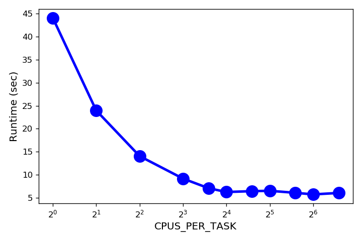
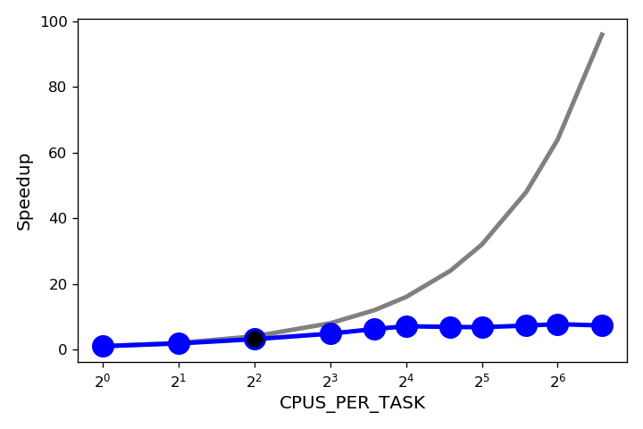
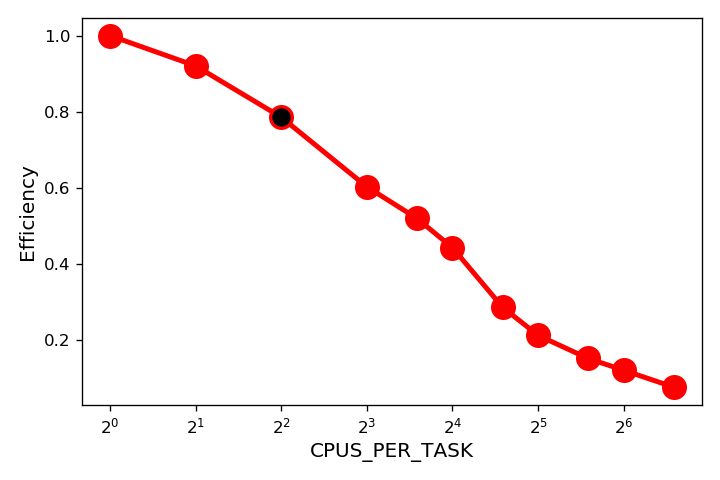
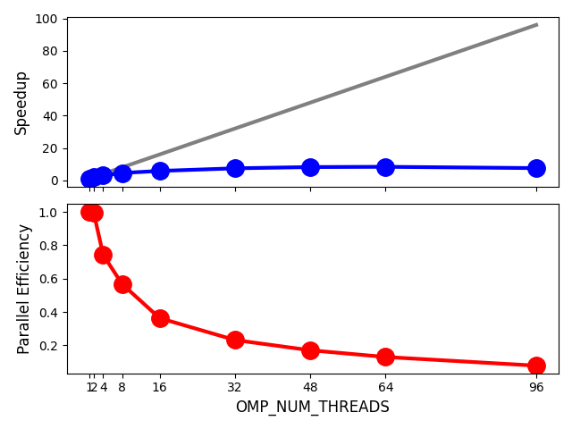
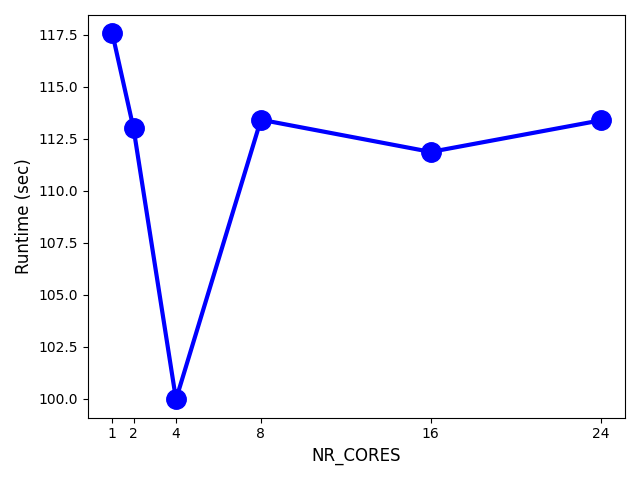

Performance aspects
2025-06-02
HTC
Possible Scenarios
Tools
Tip
Details are covered in the ‘Workflows for HPC’ training
Some R functions/operations are parallel under the hood
How do you know?
Experiments done on a wICE Sapphire Rapids node
module load R/4.4.2-gfbf-2024amodule load R-bundle-CRAN/2024.11-foss-2024aUse the time command:
real gives the walltimeuser gives the CPU time used4 minutes CPU time in 6 seconds walltime … parallelism!
%*% uses Basic Linear Algebra Subroutines (BLAS)--cpus-per-task > 1| CPUs per task (\(n\)) | walltime (\(T_n\)) |
|---|---|
| 1 | 44.1 |
| 2 | 24.0 |
| 4 | 14.0 |
| 8 | 9.1 |
| 12 | 7.1 |
| 16 | 6.2 |
| CPUs per task (\(n\)) | walltime (\(T_n\)) |
|---|---|
| 24 | 6.4 |
| 32 | 6.5 |
| 48 | 6.1 |
| 64 | 5.7 |
| 96 | 6.0 |

\(S_n=\frac{T_1}{T_n}\)

\(E_n=\frac{S_n}{n}\)

\(E(n) = \frac{T_1}{n \cdot T_n}\)
| \(n\) | \(T_n\) | \(S(n)\) | \(E(n)\) |
|---|---|---|---|
| 1 | 109.6 | 1.00 | 1.00 |
| 2 | 64.8 | 1.69 | 0.85 |
| 4 | 50.5 | 2.17 | 0.54 |
| 8 | 40.2 | 2.73 | 0.34 |
| 12 | 34.3 | 3.20 | 0.27 |
| 24 | 31.5 | 3.48 | 0.14 |
| 48 | 31.0 | 3.54 | 0.07 |
| 96 | 33.0 | 3.32 | 0.03 |

Nice?, not so much… HPC infrastructure is very expensive!
Often same script run for many parameter settings (\(N\))
| \(N\) | \(T_N\) | \(S(N)\) | \(E(N)\) |
|---|---|---|---|
| 1 | 14.0 | 1.00 | 1.00 |
| 2 | 33.6 | 0.42 | 0.21 |
| 4 | 90.1 | 0.16 | 0.04 |
| 8 | 184.4 | 0.08 | 0.01 |
| 12 | 252.5 | 0.06 | 0.005 |
| 18 | 635.2 | 0.02 | 0.001 |
Oops!?! Worse than serial?
All R instances use 96 threads, so for \(N = 18\)… \(18 \times 96 = 1728\) threads \(\gg\) number of cores
Warning
Massive oversubscription
OMP_NUM_THREADS!Set OMP_NUM_THREADS=2
| \(N\) | \(T_N\) | \(S(N)\) | \(E(N)\) |
|---|---|---|---|
| 1 | 42.6 | 1.00 | 1.00 |
| 4 | 43.7 | 3.90 | 0.98 |
| 8 | 49.6 | 6.87 | 0.86 |
| 12 | 65.3 | 7.82 | 0.65 |
| 24 | 74.5 | 13.7 | 0.57 |
| 36 | 85.2 | 18.0 | 0.50 |
| 48 | 94.3 | 21.6 | 0.45 |
\(N = 8\) seems optimal, but what the heck, you’re ruining the node anyway
Better go all the way to \(N = 48\)
Tip
OMP_NUM_THREADS \(\le\) number of cores
Applications can be
Warning
Benchmark you code!
It’s the memory architecture, stupid!
In job script: time
In job script: hyperfine
For completed job
Reading/writing many small files: bad idea!
Warning
File systems for HPC optimized for large read/write operations, not for many metadata operations!
Use appropriate file types, e.g.,
%*% operator triggers BLASOMP_NUM_THREADSS = 3333, P = 60, C = 1, N = 1| THREADS | RUNTIME | SPEEDUP | EFF. |
|---|---|---|---|
| 1 | 47.5 | 1.0 | 1.000 |
| 2 | 23.9 | 2.0 | 0.993 |
| 4 | 16.0 | 3.0 | 0.742 |
| 8 | 10.4 | 4.5 | 0.568 |
| 16 | 8.2 | 5.8 | 0.363 |
| 32 | 6.4 | 7.4 | 0.232 |
| 48 | 5.8 | 8.2 | 0.171 |
| 64 | 5.7 | 8.4 | 0.131 |
| 96 | 6.3 | 7.6 | 0.079 |

We fix OMP_NUM_THREADS=4.
--nr-coresOMP_NUM_THREADS=4, S=333, and P=60--nr-cores do?| NR_CORES | RUNTIME | SPEEDUP | EFF. |
|---|---|---|---|
| 1 | 17.7 | 1.0 | 1.000 |
| 2 | 15.9 | 1.1 | 0.557 |
| 4 | 15.3 | 1.2 | 0.289 |
| 8 | 15.2 | 1.2 | 0.145 |
| 16 | 15.4 | 1.2 | 0.072 |
| 24 | 15.4 | 1.1 | 0.048 |

--nr_matrices > 1--nr-cores=1.export OMP_NUM_THREADS=4P = 60C = 1M = 1--time=DD-HH:MM:SS)R script dgemm.R
memory_and_walltime.slurm
#!/usr/bin/env -S bash -l
#SBATCH --account=lpt2_sysadmin
#SBATCH --nodes=1
#SBATCH --ntasks=1
#SBATCH --cpus-per-task=1
#SBATCH --time=01:00:00
#SBATCH --partition=batch_sapphirerapids
#SBATCH --cluster=wice
module load R/4.4.0-gfbf-2023a
module load GCCcore/12.3.0
Rscript dgemm.R --size $SIZE --power $POWERSIZE and POWER environment variables
Submit with range of values for SIZE and POWER, e.g.,
$ sbatch --export=ALL,SIZE=5000,POWER=10 memory_and_walltime.slurm
$ sbatch --export=ALL,SIZE=5000,POWER=20 memory_and_walltime.slurm
$ sbatch --export=ALL,SIZE=5000,POWER=40 memory_and_walltime.slurm
$ sbatch --export=ALL,SIZE=10000,POWER=10 memory_and_walltime.slurm
$ sbatch --export=ALL,SIZE=10000,POWER=20 memory_and_walltime.slurm
$ sbatch --export=ALL,SIZE=10000,POWER=40 memory_and_walltime.slurm
...| job ID | \(N\) | \(p\) | walltime |
|---|---|---|---|
| 62199204 | 5000 | 10 | 00:02:17 |
| 62199205 | 5000 | 20 | 00:04:36 |
| 62199206 | 5000 | 40 | 00:08:50 |
| 62199207 | 10000 | 10 | 00:15:10 |
| 62199208 | 10000 | 20 | 00:30:57 |
| 62199209 | 10000 | 40 | 01:00:15 |
| 62199210 | 20000 | 10 | 00:04:19 |
| 62199211 | 20000 | 20 | 00:04:24 |
| 62199212 | 20000 | 40 | 00:04:34 |
| 62199213 | 50000 | 10 | 00:00:55 |
| 62199214 | 50000 | 20 | 00:00:45 |
| 62199215 | 50000 | 40 | 00:00:44 |
Inspect output for job 62199209
...
Walltime: 00-01:00:00
========================================================================
Lmod is automatically replacing "cluster/genius/login" with
"cluster/wice/batch_sapphirerapids".
slurmstepd: error: *** JOB 62199209 ON q16c03n1 CANCELLED
AT 2024-08-13T18:28:16 DUE TO TIME LIMIT ***Warning
No output, 1 hour of computime lost!
| job ID | \(N\) | \(p\) | walltime |
|---|---|---|---|
| 62199210 | 20000 | 10 | 00:04:19 |
| 62199211 | 20000 | 20 | 00:04:24 |
| 62199212 | 20000 | 40 | 00:04:34 |
| 62199213 | 50000 | 10 | 00:00:55 |
| 62199214 | 50000 | 20 | 00:00:45 |
| 62199215 | 50000 | 40 | 00:00:44 |
...
Walltime: 00-01:00:00
========================================================================
...
slurmstepd: error: Detected 1 oom_kill event in StepId=62199210.batch.
Some of the step tasks have been OOM Killed.Check RAM of node in VSCdocs, typically 256 GB
specify with --mem, e.g.,
--mem < RAM - 8 GB
specify with --mem-per-cpu, e.g.,
--mem-per-cpu \(\times\) --cpus-per-task \(\times\) --ntasks < RAM - 8 GB
Units: K, M, G, T
--mem=30G)Submit with range of values for SIZE and POWER, e.g.,
$ sbatch --export=ALL,SIZE=5000,POWER=10 memory_and_walltime.slurm
$ sbatch --export=ALL,SIZE=5000,POWER=20 memory_and_walltime.slurm
...When job, e.g., 62199204, finished, use sacct
Tip
Combine walltime and memory benchmark!
| job ID | \(N\) | \(p\) | \(M\) (GB) |
|---|---|---|---|
| 62204487 | 5000 | 10 | 0.82 |
| 62204488 | 5000 | 20 | 1.01 |
| 62204489 | 5000 | 40 | 0.82 |
| 62204490 | 10000 | 10 | 3.81 |
| 62204491 | 10000 | 20 | 3.82 |
| 62204492 | 10000 | 40 | 3.82 |
| 62204493 | 20000 | 10 | 14.61 |
| 62204494 | 20000 | 20 | 12.03 |
| 62204495 | 20000 | 40 | 12.03 |
Do not underestimate!
Warning
You will waste resource
Benchmark for walltime and memory
Warning
Unless cost of benchmarking is higher than production cost
Tip
To measure is to know: use a profiler
Rprof and summaryRprof
source%*% pretty good, not much chanceThink in terms of the algorithm
\[ A^{13} = A \cdot A^4 \cdot A^8 \]
Binary exponentiation: 5 versus 12 muliplications
If necessary, take trainings
Tip
If you are a programmer, consider parallelization